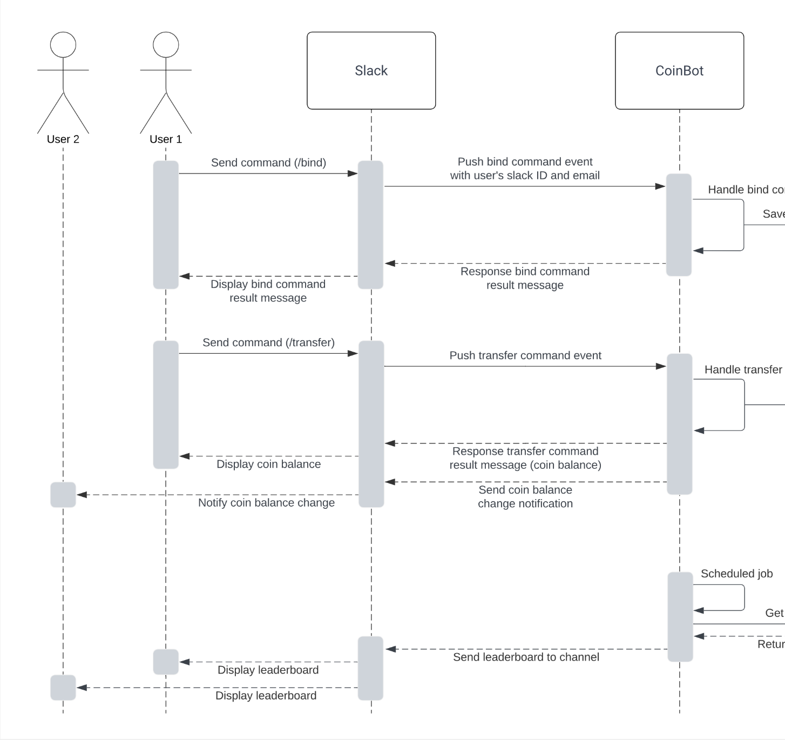

Eva Lin

I‚Äôm a third-year undergraduate student at McGill University, majoring in Computer Science and Statistics üë©ü誂Äçüíª.
I thrive on creating functional and impactful projects, demonstrated through my Midjourney & DALL-E Clone using the MERN stack, OpenAI’s DALL-E, and Cloudinary. Additionally, in the Slack CoinBot project, I utilized Python, Bolt (Slack API SDK), and MongoDB for command processing and data management. Last summer, I independently developed an e-Commerce Advertising Data Analysis Dashboard, where I conducted data analysis, and integrated technical approaches with market and product insights.
I’m passionate about using my technical skills to tackle challenging problems and improve user experiences. I’m also excited to collaborate with teams to develop innovative solutions that address real-world issues. Feel free to reach out if you’d like to connect!
highlights
- Programming Languages: Python, Java, C, R, Bash, HTML, CSS, JavaScript, UML, MIPS Assembly, OCaml
- Frameworks & Technologies: MongoDB, SQL, Pandas, NumPy, ReactJS, Tailwind, Flask, ExpressJS, NodeJS, Dash, Plotly, Streamlit, RESTful API
- Development Skills: Data Structures and Algorithms, Object-Oriented Programming, Test-Driven Development
- Developer Tools: OpenAI, VS Code, IDEA, Vite, Git, GitHub, Ngrok, Postman, Cloudinary
- Languages Spoken: English, French, Mandarin
- Fun fact: I once received an invitation to study illustration at UAL Camberwell College üé®, yet I chose to immerse myself in programming. Each line of code is a stroke of the brush I draw to create innovative solutions :D
education
| McGill University |
experience
For more past experience, please visit my LinkedIn
 | Back-End Engineering Job Simulation |
| Data Analyst Intern |
projects
For more projects, please visit my Github
| Midjourney & DALL-E Clone |
 | McHacks 11: Virtual Doctor ChatBot |
|  | Slack CoinBot |